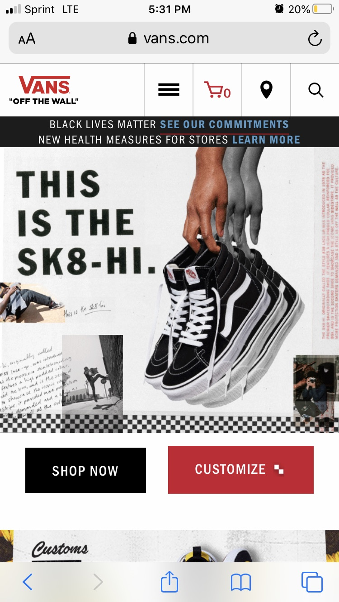

Rule of Thirds
Vans
vans.com
I thought that the Vans website presented a really neat example of using the Rule of Thirds. The shoe that you see that looks like its moving slowly appears and then disappears. I thought this was a really good example, and they do a really great job at making it look professional and organized.
White Space and Clean Design
Fitbit
fitbit.comI think that white space is really important in terms of web design because it helps the viewer not feel overwhelmed as they view a webpage. Somtimes if there is too much going on the navigation of a website can be overwhelming, and so white space helps to balance that out. I think Fitbit did a really good job at making there homepage simple but professional. Especially since they want the main focus to be the watch they are trying to sell, and the white space allows for a focal point on the watches.
Alignment
Amazon
amazon.comI feel like Amazon is changing their homepage all of the time, but this specific time I feel like it is a great example of alignment. I think they also beleive in simplicty, because I think anyone who navigates to this page can simply navigate and get around the website easily. I really liked the alignment I found on their website. The small screenshot doesn't even caption the really great amount of alignment below. I think they did a really good job at using alignment here in showing the different objects that they are trying to highlight.